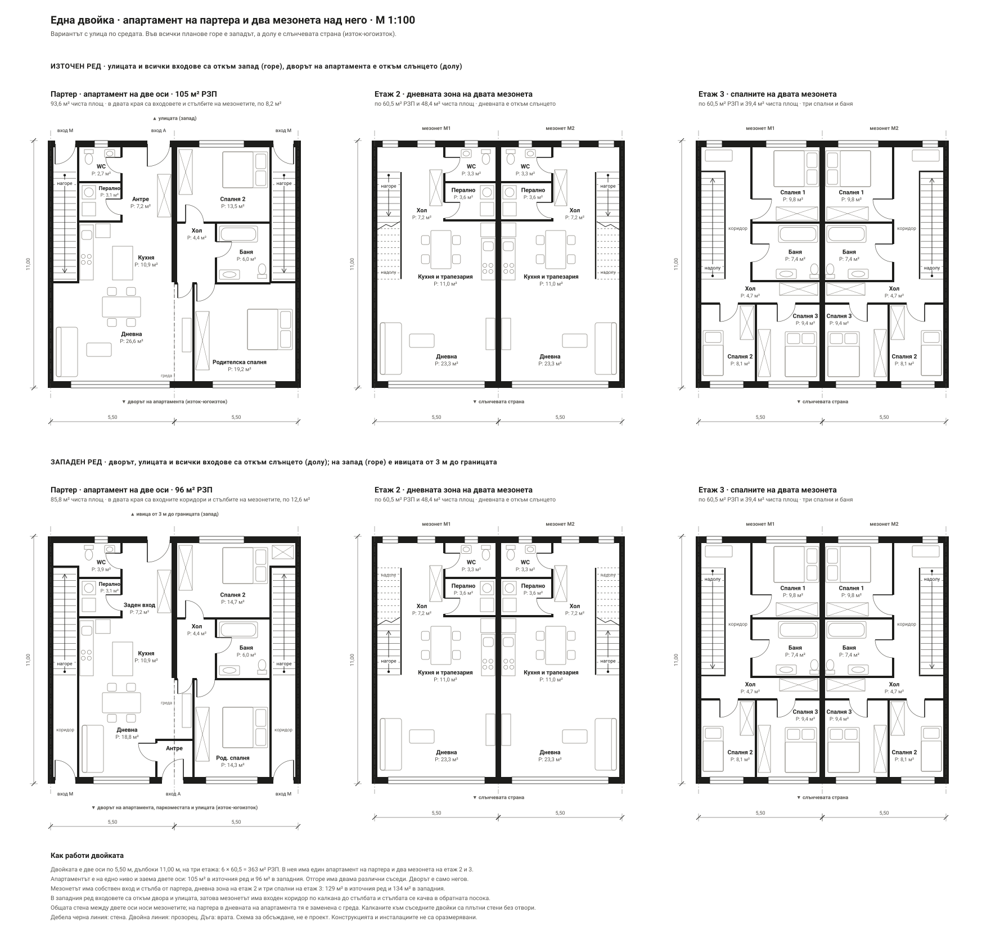
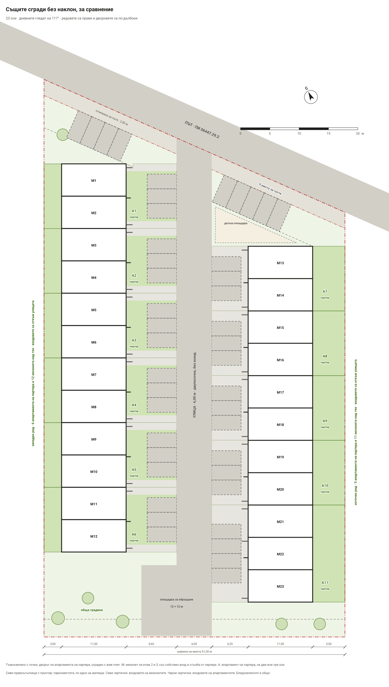

Улица по средата: 34 жилища, 4 174 м²
Улица от 6 м по средата на имота и два реда сгради на три етажа, без еркер. Сградите са завъртени на 10° към югоизток, така че дневните гледат на 127°. На партера са широки апартаменти на едно ниво, по един на две оси. Над всяка ос има мезонет на етаж 2 и 3, със собствен вход и стълба от партера. Така един апартамент има двама различни съседи отгоре. Дворът е само на апартамента и не се дели с никого.
Ситуация

Редът върви по улицата, а всяка двойка е изместена спрямо съседната с 1,94 м, за да се получи наклонът. Всички входове са откъм улицата. При източния ред дворът на апартамента е отзад и е изцяло негов. При западния ред дворът е между сградата и улицата, зад паркоместата, а отзад има още една ивица от 3 м до границата. Мезонетите нямат двор на терена: ползват общата градина в дъното и детската площадка на входа (25 м²).
Етажите на една двойка

Горният ред планове е за източния ред, долният за западния. Партерът е един апартамент на две оси, а в двата му края са входовете и стълбите на мезонетите. Етаж 2 е дневната зона на двата мезонета, етаж 3 са спалните им. Във всички планове долу е слънчевата страна.
Какви жилища излизат
| Жилище | Брой | РЗП | Какво има | Двор |
|---|---|---|---|---|
| Апартамент на партера, източен ред | 4 | 105 м² | на 2 оси, 93,6 м² чиста площ: дневна, кухня, 2 спални, баня, WC и перално | 58 м² зад сградата, само негов |
| Апартамент на партера, западен ред | 6 | 96 м² | на 2 оси, 85,8 м² чиста площ: дневна, кухня, 2 спални, баня, WC и перално | 26 м² пред сградата, зад паркоместата, плюс 44 м² ивица отзад |
| Голям апартамент на партера, източен ред | 1 | 157 м² | на 3 оси, с трима съседи отгоре; не е начертан | 79 м² зад сградата |
| Мезонет, източен ред | 11 | 129 м² | вход и стълба на партера, етаж 2 и 3 по 60,5 м²; 87,8 м² чиста площ: дневна, кухня, 3 спални, баня и WC | няма; обща градина и площадка |
| Мезонет, западен ред | 12 | 134 м² | същият, с по-дълъг входен коридор на партера | няма; обща градина и площадка |
РЗП е смятано по външните стени. Ивицата с входа и стълбата на мезонета на партера се брои към мезонета. При западния ред тя е по-дълга, защото входът е откъм двора, затова апартаментът там е по-малък.
Колко площ излиза при различна дълбочина, при наклон 10°
| Вариант | Оси | Етажи | РЗП общо | Кинт | Слънце 21 дек., партер запад / изток |
|---|---|---|---|---|---|
| Дълбочина 10,30 м | 23 | 3 | 3 909 м² | 1,00 | 3,5 / 6,0 ч |
| Дълбочина 11,00 м (начертано) | 23 | 3 | 4 174 м² | 1,06 | 3,4 / 6,0 ч |
| Дълбочина 11,50 м | 22 | 3 | 4 174 м² | 1,06 | 3,4 / 6,1 ч |
- Таванът е 4 707 м² (Кинт 1,2 върху 3 923 м²). При този наклон най-дълбоката сграда, която се побира, е 11,00 м: 4 174 м², Кинт 1,06.
- Начертана е дълбочина 11,00 м: 4 174 м². Всеки метър дълбочина добавя около 380 м² РЗП и взима около 1 м от дълбочината на дворовете.
- Еркер няма. Той засенчва витрината на партера почти целия ден; без него дневната на апартамента има 2–3 пъти повече слънце.
Какво променя наклонът от 10°

| Наклон | Дневните гледат | Оси | РЗП | Двор на апартамента, запад (отпред + отзад) / изток | Слънце 21 дек., средно, запад / изток | Слънце 21 дек., най-малко, запад / изток |
|---|---|---|---|---|---|---|
| 0° | 117° | 23 | 4 174 м² | 36 + 33 / 60 м² | 3,5 / 6,1 ч | 3,5 / 6,1 ч |
| 5° | 122° | 23 | 4 174 м² | 30 + 38 / 59 м² | 3,6 / 6,1 ч | 2,7 / 4,8 ч |
| 10° (начертано) | 127° | 23 | 4 174 м² | 26 + 44 / 58 м² | 3,4 / 6,0 ч | 2,0 / 3,8 ч |
| 15° | 132° | 20 | 3 630 м² | 29 + 50 / 51 м² | 3,3 / 6,0 ч | 1,7 / 4,1 ч |
При 10° се събират 23 оси, колкото и без наклон, и РЗП не се променя. Дневните се обръщат с 10° към юг, но средното слънце през декември остава почти същото: 3,4 и 6,0 ч срещу 3,5 и 6,1 ч. Завъртеният ред е с около 1,7 м по-широк напречно на имота, затова дворовете намаляват: в източния ред от 60 на 58 м², в западния от 36 на 26 м² пред сградата, а ивицата зад нея расте от 33 на 44 м². Двойките стават стъпаловидни и между тях се появяват открити калкани от 1,94 м.
Колко пряко слънце влиза
| Часове пряко слънце на ден | 21 декември | 21 март | 21 юни |
|---|---|---|---|
| Апартамент на партера, западен ред | 3,4 ч | 4,9 ч | 7,3 ч |
| Мезонет, дневна на етаж 2, западен ред | 4,3 ч | 6,1 ч | 7,9 ч |
| Апартамент на партера, източен ред | 6,0 ч | 7,1 ч | 7,9 ч |
| Мезонет, дневна на етаж 2, източен ред | 6,1 ч | 7,6 ч | 7,9 ч |
Смятано е на витрината на дневната, при ясно небе: при апартамента на 0,80 м над пода на партера, при мезонета на 3,90 м над терена. Засенчват всички сгради в имота, като кутии с височина 9,90 м. Съседните имоти не са включени. Дневните гледат на 127°, между изток и юг, затова слънцето влиза сутрин и до ранния следобед. В осите, до които стърчи съседната двойка, слънцето през декември е по-малко: най-малко 2,0 ч в западния ред и 3,8 ч в източния. Западният ред има по-малко, защото сутрин източният ред му пази сянка от 18,6 м разстояние.
Проверка по Наредба № Iз-1971
| Изискване | Какво казва наредбата | Тук |
|---|---|---|
| Път за противопожарни цели | Чл. 27, ал. 1, 2 и 8: за всяка сграда над 35 м²; улиците и алеите се зачитат; широчина поне 3,5 м. | Изпълнено. Улицата е 6 м и минава пред всяка сграда. |
| Улица без изход | Чл. 27, ал. 7: задънен път над 45 м завършва с площадка поне 12 × 12 м за обръщане на пожарните автомобили. | Изпълнено. Улицата е 69 м до площадката, която е 12 × 12 м. |
| Достъп до стените | Чл. 27, ал. 4: всяка външна стена на партера е на не повече от 90 м от пътя, по маршрута на шланга. | Изпълнено. Най-далеч е средата на гърба на западния ред: около 50 м. |
| Завой | Чл. 27, ал. 9: външен радиус на завоя поне 10,5 м. | Да се провери. Влизането от пътя е под ъгъл и трябва да се оразмери. |
| Площ на сградата | Чл. 13, табл. 4: за Ф1.3 на три етажа до 2 000 м² при II степен на огнеустойчивост. | Изпълнено. Западният ред е 726 м² застроена площ, източният 666 м². |
| Стени между двойките | Чл. 19 и 20: брандмауерът е REI 120, от негорими продукти (А2), без отваряеми прозорци; при горимо покривно покритие излиза 0,30 м над него. | Изпълнено. Калканите са плътни стени без отвори. Всеки мезонет има своя стълба до терена. |
| Разстояния между сградите | Чл. 405 и 406, табл. 39: 4 м между сгради от I и II степен; не се нормират, ако сградите са разделени с брандмауер. | Изпълнено. Между двата реда има 18,6 м. Изискване за разстояние до границата в наредбата няма; по ЗУТ са спазени 3 м. |
| Вода за гасене | Чл. 170: хидранти до 15 м от пътя, през не повече от 150 м; до 200 м от жилищна сграда с обем до 3 000 м³ и до 80 м от по-голяма. | Да се провери. Не знам къде е най-близкият хидрант. Една двойка е около 1 200 м³, но цял ред е над 3 000 м³, затова вероятно трябва хидрант на самата улица. |
Четено е в редакцията в сила от 31.12.2024 г., от текста на сайта на МВР. Проверката е по текста на наредбата, не е становище на пожарната. Приел съм II степен на огнеустойчивост (стоманобетон и тухла). С апартамент и мезонети един над друг сградата е многофамилна, подклас Ф1.3.
Какво не е проверено
- Дали улицата може да е задънена улица по чл. 81 от ЗУТ. Тогава площадката за обръщане не е задължителна до 100 м и се връща една ос.
- Къде е най-близкият пожарен хидрант и дали водопроводът по пътя дава нужното количество.
- Радиусът на завоя при влизане от пътя: външният трябва да е поне 10,5 м.
- Конструкцията и инсталациите. Плановете на етажите са схема за обсъждане; апартаментът на три оси не е начертан.
- Засенчването от съседните имоти, водопровод, канал и ток.